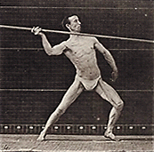
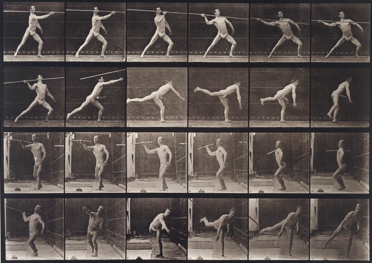

Approximate size of each actual frame
(when viewed on monitor displaying 72 DPI)
Locomotion Series 1
Thumbnail draft animation of all 12 frames

All images Copyright 1998, The Minneapolis Institute of Arts.